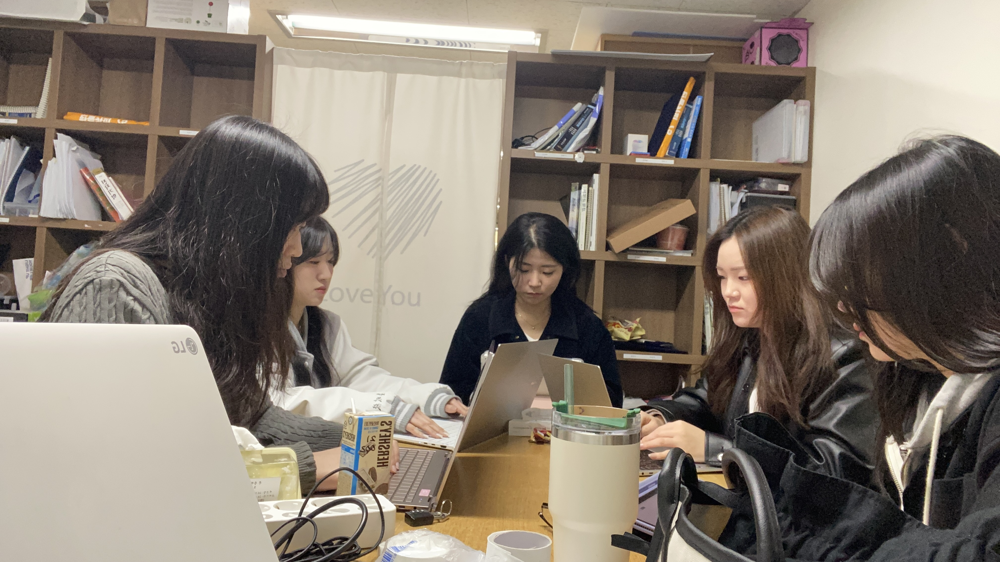
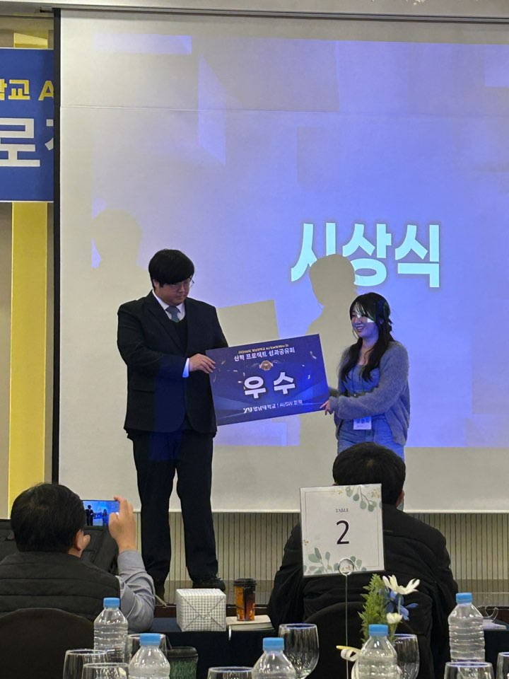
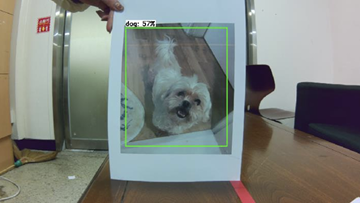
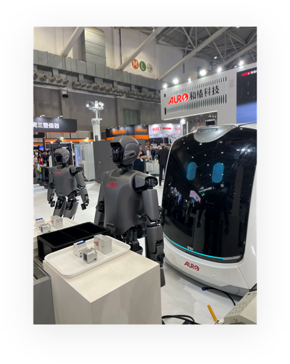
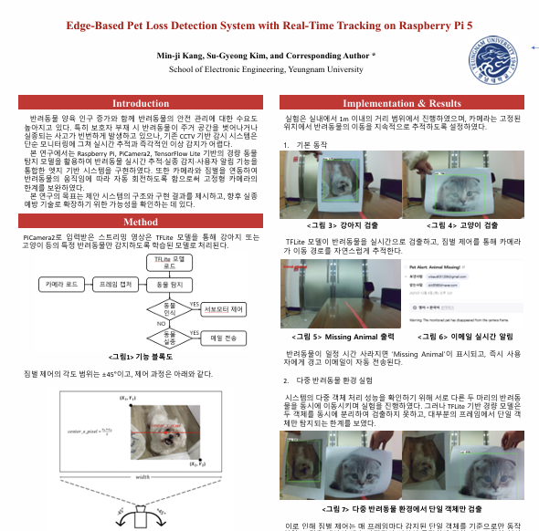
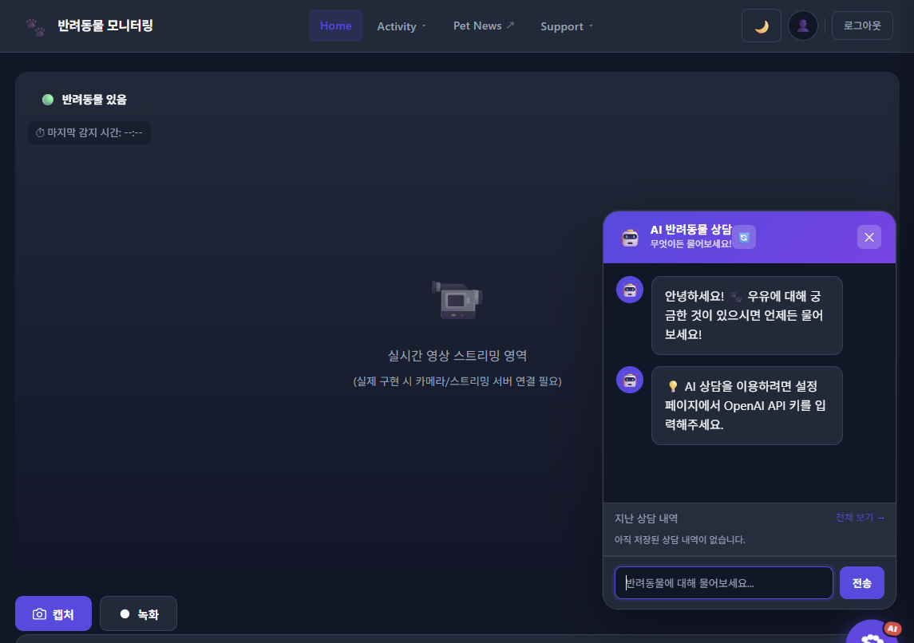
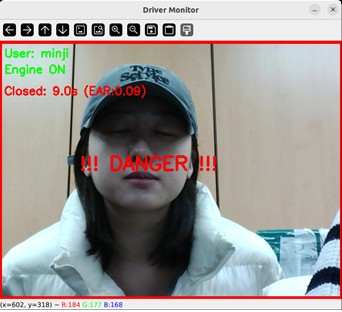
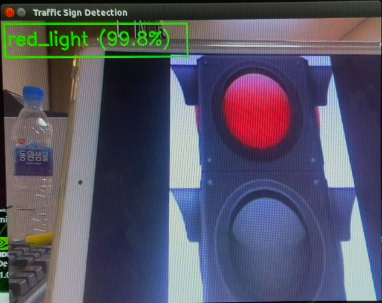
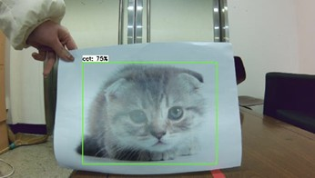

안녕하세요, 강민지입니다.
영상처리와 임베디드 시스템을 중심으로 다양한 프로젝트를 진행하며, 직접 구현하고 테스트한 경험을 담았습니다.
주변의 작은 변화를 놓치지 않고, 개선할 수 있는 부분을 찾아봅니다.
모르는 것은 직접 찾아보고, 새롭게 배운 내용은 실제로 적용해 봅니다.
다른 사람의 의견에 귀 기울이고, 함께 방향을 맞춰갑니다.

전자공학 학술동아리 부방장 및 프로그래밍 스터디장

감시정찰 카메라 시스템 개발 · 성과공유회 우수상

반려동물 탐지·추적 및 실종 알림 시스템 개발·출품

Intelligent Asia 2025 산업 박람회 참관

엣지 기반 반려동물 실종 감지 시스템의 구현 과정과 실험 결과를 논문으로 정리·발표

Cursor AI를 활용한 웹·DB 구축 및 OpenAI API 연동 실습

얼굴 인증 결과를 시동 제어와 연동하고, 운행 중 졸음 상태를 감지해 경고하도록 구현

5종 교통표지판 인식 결과를 젯봇의 정지·출발 제어와 연동

반려동물 탐지부터 짐벌 추적, 미감지 시 이메일 알림까지 통합 구현